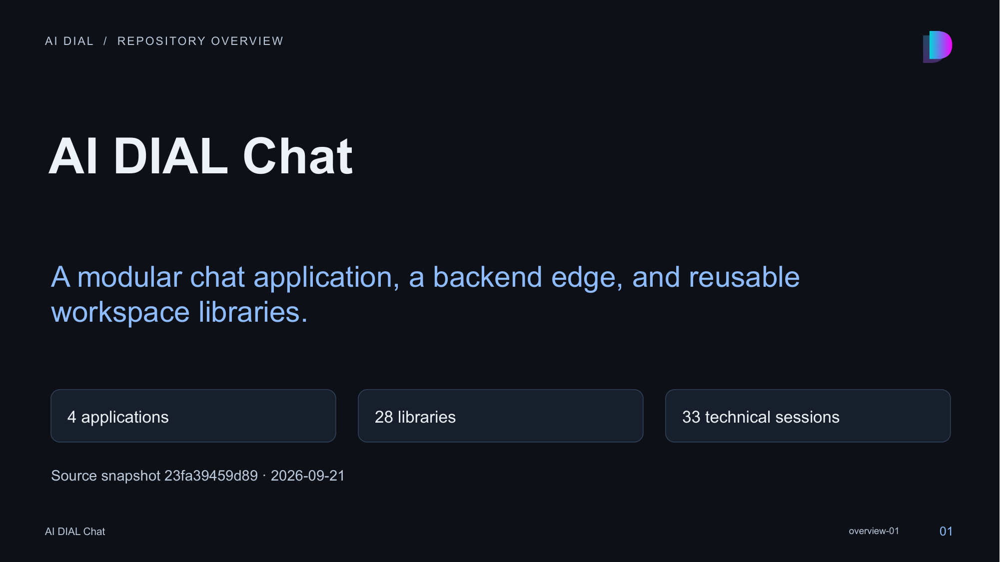

01 · AI DIAL Chat

Speaker notes and sources
This series is grounded in the local working tree and Nx graph. It includes one overview plus one deck per application and library. The auxiliary attachment-canvas-consumer-fixture project is in the Nx graph but is not a separate app/library topic. Publishing scripts remain auxiliary tooling. Untracked skill and OpenSpec artifacts are recorded in the manifest. No performance benchmark or production-readiness assertion is made.
- docs/architecture.md:1-765
- package.json:1-199